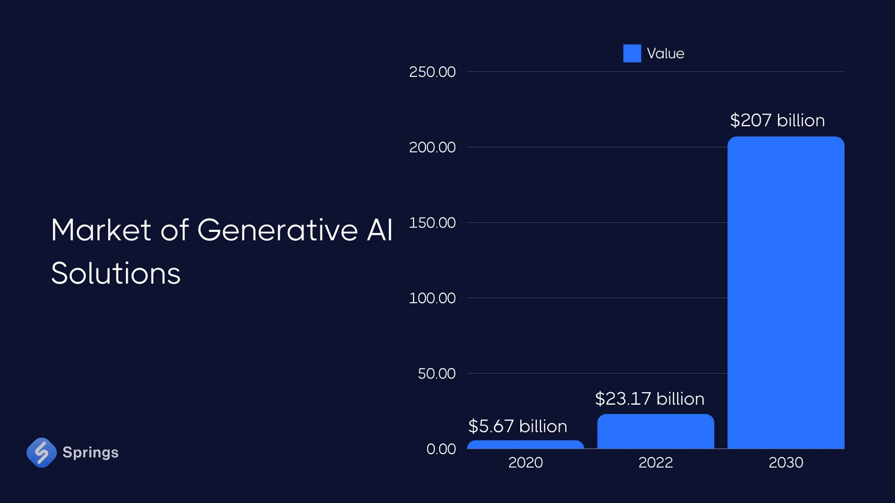
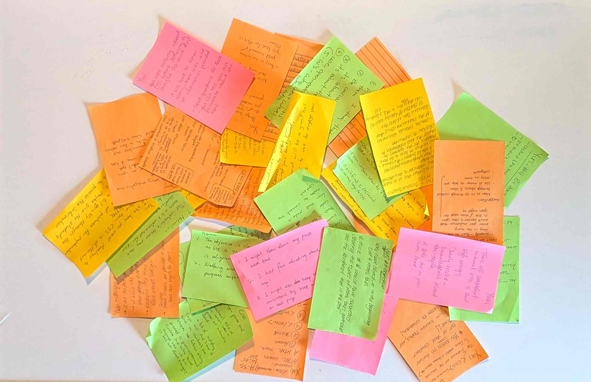
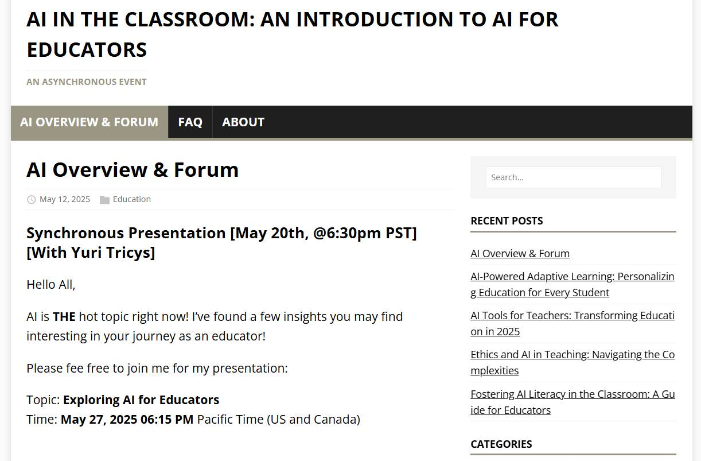

Provincial Instructor’s Diploma Program
PROFILE
Profile +
YURI J. TRICYS -
Web Development Instructor

LinkedIn: yuri-tricys-aa004b26
Github: https://buildhello.ca
Github: https://readingworldmagazine.com
Curriculum Vitae: https://xyz-abc-show-and-tell.github.io/uploads/resume_yuri_tricys_2025_teaching_front_end.pdf
Email: tricys@alumni.ubc.ca
Phone: 1-604-441-9933
Academic Writing +
Hugo Website +
Email Newsletter +
"So you know everything about HTML newsletters? Seems like there is a lot to know..." "Thanks for the feedback, I am working on the presentations..."
Wordpress Website +
Research +
Emacs +
PIDP 3100
[PIDP 3100] Foundations of Adult Education +
Web Development Instruction [PIDP 3100] +
Trends in Web Development [PIDP 3100] - Exercise 4, Part 1 +
Trends In Web Development - AI
Click the image below to read the recent blog post on trends in web development.

[Source: https://buildhello.ca/space_ex_light/2025-01-25-trends-in-web-development/]
Trends in Adult Education [PIDP 3100] - Exercise 4, Part 2 +
Trends In Adult Education - AI
The integration of generative artificial intelligence (AI) in education is a significant trend that is reshaping how we learn and teach.
Click the image below to read an article about AI trends in adult education, written by Serhii Uspenskyi.
[Source: https://springsapps.com/knowledge/main-ai-trends-in-education-2024]
Here are some of the key trends mentioned in the post:
- Using Generative AI to Make Educational Content
- Teaching With Virtual Avatars
- New Opportunities For Arts Students
- Personalized Learning Experience
- Inclusive Education
- Student Support
- Intelligent Tutoring
- AI Agents Integration
Comments
All of these trends could impact web development instruction, depending on the requirements of the institution.
Web development itself, as a branch of software development, is likely to rely largely on generative AI going into the future, especially with respect to AI agent integration.
That means to instruct web developers effectively, a web development instructor must understand and be able to use generative AI in both teaching and developing websites.
To repeat: one way or another an instructor has to learn to integrate a generative AI agent into a web development pipeline, so that he/she can teach it.
While using generative AI to make educational content is optional, it's definitely an intelligent consideration.
Personally, I already use generative AI. For example, I used generative AI to find the article I posted above and summarize aspects of AI in education.
[Though I didn't use the summaries AI generated, since the article above had in my opinion better summaries.]
Also, I'm currently attempting to take multiple courses in generative AI and machine learning while taking the Provincial Instructor's Diploma.
The downside of AI in education is that learning it is yet another workload on instructors, on top of the work it took them to master web development to the extent they can teach it in the first place.
The upside of AI in education is that it should be boost productivity, making it possible for instructors and students to do more and learn more in similar time frames.
Cognitive Learning [PIDP 3100] - Exercise 3 +
The Effects of Disfluency On Education
Click the image below to read our post on the effects of disfluency on educational outcomes.

[Source: https://buildhello.ca/ex_light/2021-11-01-selecting-a-font-for-your-project/]
Learning Partner Call [PIDP 3100] - Exercise 4 Part 3 +
A Discussion on Education, AI, and Digital Media
I caught up with my learning partner early in the afternoon on a cold Wednesday in February of 2025.
Outside, there was a lot of snow on the ground, and ice. Vancouver gets cold, some winters. This apparently was one of them.
I did everything I could to get the lighting right on the camera.
Not bad, actually, but it is time for me to upgrade the tech stack I'm using for Zoom calls.
I clicked on the Zoom link. A few minutes later Filipe started the meeting.
No camera.
After some introductory conversation, Filipe let me know what he does.
He's an instructor of business studies, who teaches business strategy as well as entrepreunership.
I let him know I'm a web development specialists pursuing, along with the instructor certification, which was the reason him and I were speaking, various projects in the digital media space, like Reading World Magazine, for example.
We began to speak along some preplanned meeting points. We were to discuss trends in adult education, as well as our own personal areas of expertise.
Our conversation went on longer than I expected. There is a lot going on in the field of education, in business, and in web development.
I got a sense immediately of Filipe's passion for his subject matter, and of what appears to be a key trend in education today, which sounds like an institutional level movement to ensure offerings from the education sector are unique in value from freely available, and often high-quality, digital media.
His schools are working hard to stay relevant in the era of global, free, quality education.
I thought about the numbers. Are college enrollments falling? Is the education sector in a dip?
Oh, how I'd love to see the numbers.
He started talking about solutions and brought me back to attention quickly.
Filipe mentioned several strategies his schools are implementing to address the modern relevance of a college education.
Strategies School's Are Implementing to Stay Relevant.
- Fewer lectures [40 minutes]
- Case scenarios
- Group Discussions
- Ensuring student's are putting into practice what they're learning.
- Institutional connections with employers (visits from recruiters and specialists)
It all sounded like more social cognitivism, which may not be a bad thing.
The historical reality is that a college education predicts higher income, and while the story has always been it's the skills that drive upward financial mobility, in business schools at least, there has always been an emphasis on the importance of social networks. The traditional work place is still a place of 'work tribes'. Where you went to school matters, as does having the shared experience of a college education.
What Filipe was describing sounded like a movement to ensure higher-education continues to deliver more of what free digital media can't: social cognitivism.
Here is not the place for me to write fully about the trend in education Filipe spoke of, but if you're reading this, I encourage you to think about the place of formal education in society, and how that place will change or adapt.
Filipe also spoke about a trend in business strategy, particularily in Canada, which is that Canadian firms are now experiencing the social economic consequence of enhanced political tension along the international supply lines, particularily between Canada and the U.S.
It's no longer a theoretical case study. It's the real thing.
Filipe emphasized social implications of trade tensions (potential tariffs), for example, how hiring could be impacted as well as a 'buy-Canadian' trend, if the outcomes of Canada/US trade negotiations lead to tariffs.
As an economics major, I thought about the more usual model, which is a price driven reduction in cross-border trade, decimating some sectors and businesses and reviving others.
It was good to get Filipe's perspective.
For my part, I discussed the rise of artificial intelligence in education, particularly with respect to ways it could be used to improve curriculum writing, and how important it is to ensure students are taught how to use it intelligently in the context of the speciality they're pursuing.
Filipe commented on a concern in the education sector about how student's are using AI to potentially, if I understand correctly, cheat on scores. As someone who thinks about the value an indivual brings to the table, that's not something I would have thought of.
That's another reason I enjoyed the conversation.
I spoke also about the importance of AI in web development. Specifically, how implementing AI in dev-ops pipelines, as a tool manager, to streamline automations and reduced workloads on web developers, is critically important.
To the extent, in fact, that I view a hands on education in AI as a tool manager, as a mandetory part of web development instruction.
In conclusion, my conversation with Filipe was insightful and useful, in terms of better understanding trends in adult education.
I got a sense of not exactly concern, but certainly awareness, among teachers about potential job loss from the impact of digital media, and AI, on the teaching sector, which is not something I would have thought about on my own.
I always enjoy discussions that explore new opportunities for education, theory, perspectives, and analysis of current events.
It was a real pleasure discussing these subjects with Filipe.
PIDP 3220
[PIDP 3220] Delivery of Instruction +
Overview [PIDP 3220] +
The class was one week in duration. Eleven of us joined together in classroom with an instructor who taught us concepts around creating lesson plans, engaging learners, and delivering instruction.
Each of us prepared three ten minute lessons. On three of the days, we delivered those lessons and gave written and verbal feedback to the presenting instructor.
We prepared lesson plans for our lessons and graded each other how our lesson delivery matched up against the concepts we learned, and concept grounded activities we engaged in throughout the rest of the week.
Finally, we wrote reflections on our performances, to give ourselves things to work on going forward.
Here is a link to slides on the teaching concepts we covered in the class:
https://xyz-abc-show-and-tell.github.io/pidp/delivery_of_instruction_slides_content_slides.html
Presentations [PIDP 3220] +
Here are links to the slides I prepared for my presentations.
Feedback on Presentations [PIDP 3220] +
The other instructors wrote their feedback on sticky notes and left them at my table.
Here is what that looks like:
And here is their anonymous feedback:
Additional Notes About My Presentations
Personally, I wasn't happy with any of my presentations. My confidence was at its highest in my first presentation; however, I didn't quite get to the calmness, or monotonish tones I was looking for.
My second presentation was in my opinion the worst. There was a natural harmony to the conversations in the classroom, a kind of symphony of sound (okay, it was more like a symphony of chatter and chirping), and I didn't feel the 'notes' I was playing harmonized as well as they could have with the others. In general, I have been disastisfied with my voice lately, which is why I have been taking voice therapy.
In my third presentation, I defaulted to a voice I used on the video presentations you can find on Build Hello here: https://buildhello.ca/blog/2021-11-19-what-is-above-the-fold/. Everybody liked that voice, and gave me better reviews for that lesson. However, to be honest, that voice is a little too 'how to put on the oxygen mask on an airplane' for me, but it seems to work for teaching basic material.
The take away for me was that I have to continue putting my effort into working on voice development and conversational delivery. Over the last 14 years I've put most of my energy into learning computer programming, web development, data science, and economics; and I've been successful at achieving some mastery at that. However, for the most part during that time I was not developing the group skills that are critical to taking a project to the next level. Fortunately, I now have a better perspective of where I can improve, as well as some material I can use to improve with. I'm confident if I put in any where near to the kind of effort and attention I put into computer programming, it won't be long before I improve on my communication skills.
PIDP 3300
[PIDP 3300] Learning With The Adult Brain in Mind +
Overview [PIDP 3300] +
The class was 8 weeks in duration. The assignments were called activities, emphasizing principles of self-directing learning.
This gave the impression of it being easy, but there was a presentation at the end, that could be considered difficult, based on the level of quality the student wanted to achieve.
I looked through the presentations from other students, and decided on a level of quality, which I think I more or less achieved, though there is always room for improvement.
The first activity was a Zoom or phone call with the instructor, which set the pace for the other 3 activities.
The second activity was an 'ORID' reflection, which is a format for reflections that goes like this:
- Objective
- Reflective
- Interpretive
- Decisional
Here is my ORID reflection: https://xyz-abc-show-and-tell.github.io/pidp/learning_with_adult_brain_in_mind/pidp_3300_activity_2.pdf
The third activity was to attend another student's presentation, which was easy enough, as there were many students.
The final activity was a presentation, which is detailed in the next section.
The 8 week timeline was nice, since most of the students keep a busy schedule.
Presentation [PIDP 3300] +
Here is a link to the slides I prepared for my presentation.
https://xyz-abc-show-and-tell.github.io/pidp/learning_with_adult_brain_in_mind/optimizing_curriculum_cognitive_load.html
Here is the video of the presentation:
Reflection
Content Reflection
a. One thing I learned from my topic:
I learned that the potential for unique thoughts is astronomical large.
b. What I will be doing differently:
I combined a lot of information into one presentation. I'd like to experiment with more narrowly focused presentations. I could have pulled flow-state out into its own presentation.
c. Most Informative Resource and Why:
I found Shaffer et al. 2003 the most informative resource. They provide a lot of techniques and strategies that apply to curriculum development.
My favorite resources, however, were Steven Kotler's YouTube videos. He presents in a way that keeps people watching, is always good.
Presentation/Technical Reflection
a. Something I was proud of:
I was proud that I've learned to generate slides directly from notes, using reveal.js and emacs org-mode.
b. One thing I would do differently:
I'm focusing now on speech therapy and voice development. I generated a YouTube transcript and counted verbal mistakes and extra words. I said 'so' 87 times and 'uh' 100 times in the video, which is a bad habit.
I created videos of myself repeating Roger Peng, a data scientist from John Hopkins, and Simon Sinek, the public speaker. They are both world class speakers, but still, the video of my presentation doesn't sound as smooth.
https://www.youtube.com/watch?v=S6RZAbLhF6k [Roger Peng]
https://www.youtube.com/watch?v=44ZBcx30cxM [Simon Sinek]
I'd like to speak more slowly in the future to remove extra words and create more coherency and verbal melody. I can work on increasing the speed later.
c. What I learned about making a presentation:
I learned that practicing a presentation more thoroughly in advance will create more opportunities for impromptu presentation, and space to discuss with audiences. You could then remove text from the presentation, and rely on bullet points to trigger conversation points
References
Alameda, C., Sanabria, D., & Ciria, L. F. (2022). The brain in flow: A systematic review on the neural basis of the flow state. Cortex, 154, 348-364. https://doi.org/10.1016/j.cortex.2022.06.005
Andreev, I. 2022. Cognitive learning. Valamis Group. Retrieved From: (https://www.valamis.com/hub/cognitive-learning)
Big Think. (2015, February 27). The Neurochemistry of Flow States, with Steven Kotler [Video]. YouTube. https://www.youtube.com/watch?v=aHp2hkue8RQ
CNS (Clinical Neurology Specialists). (n.d.). What is the Memory Capacity of a Human Brain? Retrieved from https://www.cnsnevada.com/what-is-the-memory-capacity-of-a-human-brain/
Cocks, B., Nandagopal, N., Vijayalakshmi, R., Thilaga, M., Dasari, N., & Dahal, N. (2013). Breaking the Camel's Back: Can Cognitive Overload be Quantified in the Human Brain? Procedia - Social and Behavioral Sciences, 97, 21-29. https://doi.org/10.1016/j.sbspro.2013.10.200
Csikszentmihalyi, M. (1990). Flow: The Psychology of Optimal Experience. Retrieved from https://www.researchgate.net/publication/224927532_Flow_The_Psychology_of_Optimal_Experience
Davis, G. (2024). How to get in the flow while coding and why it's important. The GitHub Blog. https://github.blog/developer-skills/career-growth/how-to-get-in-the-flow-while-coding-and-why-its-important/
Herculano-Houzel S. (2009). The human brain in numbers: a linearly scaled-up primate brain. Frontiers in human neuroscience, 3, 31. https://doi.org/10.3389/neuro.09.031.2009
InteDashboard. (n.d.). Graphic with blue background describing cognitive learning. [Image]. Retrieved from https://www.blog.intedashboard.com/blogs/active-learning/cognitive-load-theory
Jeelh. (2021, May 30). Blender Hyperspace Jump [Video]. YouTube. https://www.youtube.com/watch?v=6ga4IICXyCE
Kotler, S. (2021, May). Getting into the flow, with Steven Kotler - This Is Your Brain. This Is Your Brain. https://thisisyourbrain.com/2021/05/s2-episode-10-getting-into-the-flow/
Kotler, S. (2022, May 1). How to enter ‘flow state’ on command. Big Think. https://www.youtube.com/watch?v=znwUCNrjpD4
Kwik, J. (2020). Optimal Flow State with Steven Kotler. Retrieved from https://www.jimkwik.com/podcasts/kwik-brain-186-optimal-flow-state-with-steven-kotler/
Metro Nashville Public Schools. (n.d.). Blue and yellow image of sample student schedule. [Image]. Retrieved from https://coronatodays.com/virtual-learning-day-schedule-east-noble-high-school/** Parnin, C., & Rugaber, S. (2010). Resumption strategies for interrupted programming tasks. Retrieved from https://www.cc.gatech.edu/~vector/papers/sqj.pdf
Popper, B. (2018, September 10). Developer Flow State and Its Impact on Productivity. Stack Overflow. https://stackoverflow.blog/2018/09/10/developer-flow-state-and-its-impact-on-productivity/
Raichle, M. E., & Gusnard, D. A. (2002). Appraising the brain's energy budget. Proceedings of the National Academy of Sciences of the United States of America, 99(16), 10237-10239. https://doi.org/10.1073/pnas.172399499
Sali, R. (2020, August 4). 22 Flow Triggers: The Ultimate Peak Performance Toolkit for Hacking Flow. Retrieved from https://www.raizasali.com/post/flow-triggers-for-hacking-flow
Sewell, J. L., Santhosh, L., & O’Sullivan, P. S. (2020). How do attending physicians describe cognitive overload among their workplace learners? Medical Education. doi:10.1111/medu.14289
Shaffer, D., Doube, W., & Tuovinen, J, (2003). Applying Cognitive Load Theory to Computer Science Education. Retrieved from: (https://www.researchgate.net/publication/250790986_Applying_Cognitive_Load_Theory_to_Computer_Science_Education)
Shelby Burr. (n.d.). 10 Unforgettable Statistics about Human Memory. Southtree. https://southtree.com/blogs/artifact/10-unforgettable-statistics-about-human-memory
Stanford University Medical Center. (2010, November 17). Stunning details of brain connections revealed. ScienceDaily. Retrieved March 28, 2025 from www.sciencedaily.com/releases/2010/11/101117121803.htm
Tseng, J., Poppenk, J. Brain meta-state transitions demarcate thoughts across task contexts exposing the mental noise of trait neuroticism. Nat Commun 11, 3480 (2020). https://doi.org/10.1038/s41467-020-17255-9
Weinstein, Y., Madan, C.R. & Sumeracki, M.A. Teaching the science of learning. Cogn. Research 3, 2 (2018). Retrieve from https://doi.org/10.1186/s41235-017-0087-y
Your eLearning World, 2020. The Learning Theory Of Cognitive Development In ELearning. Retrieved From: (https://yourelearningworld.com/the-learning-theory-of-cognitive-development-in-elearning/)
Presentation Transcript With Verbal Errors [PIDP 3300] +
And we're going to start the presentation for optimizing curriculum for cognitive load.
So it's March 29th 2025, just past, uh, 3:30 p.m., and today we're going to be talking about optimizing curriculum for cognitive load. 11
In the background you can see an image of an electrified brain. That is something we're going to talk about as well, cognitive overload.
Before we start, uh, VCC, the provider for this course, is located on the unseated and incestral territories of the musam Squamish and slay tooth Nations, which have been stewarded by them since time in Memorial. I'm grateful for the opportunity to take this course on these territories. 12
uh my name is Yuri trices. I'm a Canadian from Lithuanian and African-American descent. I'm a web developer, researcher and consultant. I come from a varied educational background having studied formal Sciences, History, Literature, economics and during the last 12 years, the Computer Sciences. 13
Today I'm going to talk about cognitive load Theory, a topic you may know about already given the context of this presentation, but we're going to talk about it alongside the concept of flow or Flow State, and ultimately along with flow, curriculum development and the Computer Sciences.
So you can see an image here of hyperdrive. it's an image that you might expect to see in an animation of Star Wars, or something like that, and this is an image that really signifies going into the Flow State. You're going to see this image again later in the presentation, when I talk a little bit more about Flow State. 23
First we're going to talk about some of the facts of the brain because we are talking about cognitive load Theory and cognitive loading, and uh cognitive development in general. 24
So facts about the brain, uh 6,000 200 thoughts go through the brain on any given day. You might find numbers like 60,000 or 70,000 if you ask AI how many thoughts go through your head in the day and it really depends on how you categorize a thought. so This research from saying and pomping in 2020, they categorize thoughts in 'sort of like' threads, they call them thought worms, and they come up with probably the most sophisticated measurement of thoughts, Uh current sophisticated measure of thoughts, of about 6,000 thoughts per day. 46
Short-term memory seven pieces of info can be stored in your short-term memory at once on average, uh and held in short-term memory for about 20 seconds, and the average brain has about 200, uh 2.5 million gigabytes of memory, if you've got let's say 1,000 or 2,000 gigs on your computer, you can imagine how much you can store in a brain that has 2.5 million gigabytes of long-term storage. 48
So 86 billion neurons in the brain and more than 125 trillion synaptic connections. So you can, uh a lot of times people talk about the number of neurons and the number of synaptic Connections in the context of the Milky Way.
The Milky Way has hundreds of billions of stars and so we tend to think of the brain 'kind of' as large as The Milky Way. the re uh. 610
You might want to look into those numbers a little bit more, but the reality is that when we have one ".2" 125 trillion synaptic connections and 86 billion neurons and each neuron can have up to 10,000 connections.
So if you think in terms of a probabilistic um combinatorials, you can have as U, and each different combination is a different thought, you can have as many different thoughts as there are atoms in the known universe. The number is absolutely astronomical in terms of how many unique thoughts you can have. 711
So the the brain makes up about 2% of the body's weight and it uses up about 20% of total caloric intake. one of the reasons is that the brain is electrified. Neurons have axons and dendrites and they've got an electric current that goes through the neuron and then chemical synapses that pass that current um between different neurons. 812
so you can see this is an image of the brain and this electrical current that travels through the neurons is what causes this huge caloric intake, 20% of the total caloric intake, so what is cognitive load Theory? 1012
Cognitive load theory is a way that we can talk about the brain and how we work with the brain using terminology. We've got intrinsic, extraneous, and germine are the types of uh are three words that we use when we're talking about cognitive load.
1013
So intrinsic, as you can see up here, is the complexity of new information, and here we're talking about ... if you wanted to have a phone call with someone and you wanted to say some uh particular points but you didn't want to read from a script, you might study for 5 10 minutes before you make that phone call, so that you have all of the information stored in your mind before you make that phone call.
1214
What you would have done is just loaded up your intrinsic cognitive load, that would be the things that you wanted to say on the phone. reword
Extraneous cognitive load is the load that comes from external sources. the could be bad lighting, it could be people talking, it could be distractions, it could be a a poorly written textbook or a poorly designed handout.
now Germain is how we describe the process of formulating memories. the process of taking information and turning it into longterm storage, or short-term storage.This is created by creating schemas.
It takes information and it organizes that information so I've uh we're going to talk a little bit more about each one of these again 1315
so intrinsic cognitive load, just to repeat it, refers to the inherent complexity of a task or information being learned. it's determined by the number of interacting elements that must be processed simultaneously. for example working on a complex computer science program might involve understanding complex directory structures, build pipelines tooling chain switches and conditions and multiple programs each with many variables and values as well as other varied aspects of the problem space that work together to generate a programs output. 1415
intrinsic cognitive load is important uh in terms of Computer Sciences, when we're talking about cognitive loading and a cognitive load and designing curriculum for both of those uh different types of cognitive load extraneous. 1418
Co cognitive load refers to the mental effort caused by unnecessary or distracting elements. we're talking about noise threats social activities visually confusing elements in the environment, like lighting and ...
Germaine cognitive load, again here we're talking about encoding knowledge into long-term memory, which includes identifying it categorizing it and then encoding it the brain is creating new synaptic connections between neurons and more broadly between neural networks.
The cognitive load threshold so cognitive load threshold, it's not on this chart, but a cognitive load threshold is a theoretical threshold that identifies the difference between cognitive load, normal cognitive load and cognitive overload. 1518
It's theore iCal because it can't be identified in any precise way, but we can presume it to be different for every individual and also for individuals across different circumstances. What we can say is that when the cognitive load of Any Given individual passes their cognitive load threshold they become cognitively overloaded.
Now we're going to talk a bit about the overloaded brain, and then we're going to talk about this concept called uh Flow State, and then we're going to talk about more about um designing curriculum for cognitive loading and cognitive load. 1520
So the overloaded brain so Bernan Cox and several other researchers in 2013 published breaking the camels back can cognitive overload be Quantified in the human brain. their research looks for a precise difference between cognitive load and cognitive overload they tested subjects with strip tasks under different levels of cognitive load and distraction, such as audio stimulus, while scanning their brains with a neuros scanner. 1720
they then used statistical methods such as fouryear Transformations and paired T tests to measure air rates and reaction times while their sample size was small, their results suggested performance decrements of up to 56% for error rates and 81% for reaction times. they were not successful in identifying what we uh could call a precise cognitive load threshold, or devising a unit of cognitive load, but they did find localized areas in the brain that were visible when scanned as the brain moved from normal to overloaded cognitive load. 1721
so we're not going to go into detail about where cognitive load shows up in the brain, but it is helpful to remember that an overloaded brain can have 5 56% and or higher error rates and 81% slower reaction times.1821
Another research paper by seall Santos anos solivan in 20120 titled how do attending physicians describe cognitive overload among workplace Learners give some insights into how to recognize cognitive load in students so they conducted a secondary quality analysis of transcripts of interviews among Health Healthcare workplace teachers to identify signs of cognitive load. Their results are helpful in spotting cognitive overload in students. 1921
so if your students uh have poor performance on workplace tasks students, are workers, nonverbal physical manifestations, this could be not so dextrous making um behavioral mistakes, verbal utterances uh they could be swearing, they could be mumbling, they could be talking to themselves, they could be groaning. nonoptimal interpersonal interactions. so this is any anywhere from bickering to just not really creating strong workplace interactions or Schoo yard interaction. 2124
so things just aren't going well you can tell um maybe that they're cognitively overloaded. 2225
there's another paper that I will put in the references, that I didn't get a chance to read, but they were looking at cognitive load on manufacturing and they had some deeper insights into how to recognize cognitive load. some of the things that they mentioned is that uh people that are under high cognitive load or cognitive overload might have dilated pupils, their eyes might get wider and also they might blink a lot more. 2225
okay so now we're going to talk about the Flow State. 2325
so cognitive load or cognitive overload is what happens when your brain is overloaded and you are not performing well. You're making mistakes, you're um fatigued, your relationships are suffering, and you're not very responsive. you're not picking things up very quickly. 2426
so Stephen Cotler author of the rise of Supermen decoding the science of ultimate Human Performance describes a flow State as an optimal State of Consciousness where individual feel and perform their best. 2527
it's it's kind of the opposite of cognitive overload uh, in this state people experience moments of wrapped attention and total absorption becoming so focused on the task at hand that everything else disappears. action and awareness merge and the sense of self vanishes. 2528
signs you might be in a state of flow, this is from uh she she she sent me high high ali uh she sent me ha uh from 1990 miali she sent me 2529
Challenge skills balance is the number one sign you might be in a in a state of flow, I don't think these are ordinal. This means if you uh are challenged you've got the skills to meet those challenges. 2530
Total concentration you're totally absorbed in the task clear goals you understand what you want to achieve immediate feedback you're in the zone you're getting feedback from your actions from your words from your behaviors, from your everything that you're doing is responsive to you transformation of time time disappears
feeling intrinsically rewarded uh this has been related to addiction when you're in a state of flow it becomes addicting you can think of highspeed skiers you can think of high performing athletes gymnasts also computer programmers you're doing so well it's rewarding you. you feel good. you want to do it more. 2531
effortlessness effortlessness effort uh it's just a Things Are going well. 2532
loss of self-consciousness you're uh not self really aware you're not really self-conscious you're in the zone you're focused on what you're doing and you have a feeling of total control 2533
uh so a well-known study by Cranston and Keller from 2013, this is a McKenzie study, showed that people in Flow State reported increasing their productivity by 500%. 2634
Other benefits of being in the state of flow described by stepen Cotler include higher intrinsic motivation enhanced pattern recognition really good for programming you're able to pick things up. you can you can look at the the data, you can understand the data. heighten senses more information PRP process per second creativity increases 500 to 700% learning speed increases from 240 to 500% heightened problem solving abilities
so as you can see the flow state is the opposite of being cognitively overloaded
if you're in Flow State you're in the zone and you're learning twice as fast your creativity increases you're five times as more productive and your problem solving goes up 2734
uh flow is a big deal in computer programming which is a high cognitive load activity again according to Cotler flow requires a 4% higher level of difficulty than you're accustomed to to push the body into Flow State computer programming is difficult you're almost always doing things that are a little bit harder than you know how to do, so you're constantly in the Flow State you're constantly learning. 2835
Joel spoki uh one of the ERS of stack Overflow once said productivity depends on being able to juggle a lot of little details in short-term memory all at once any kind of interruption can cause these details to come crashing down when you resume work you can't remember any of the details like local variable names variable names that you were using or where you were up to in implementing that search algorithm and you have to keep looking these things up which slows you down a lot until you get back up to speed 28 36
B pop popper um at stack Overflow wrote an article in 2018 titled developer flow state and its impact on productiv uh productivity, and he's really following up on what Joel spoki was saying about how easy it is for a developer to get knocked out of Flow State 2838
so workers experience 87 interruptions per day these are not specifically computer programming workers but these are just regular workers that are just
2938
interrupted programmers take 10 to 15 minutes to start editing code after an interruption
so one uninterrupted 2-hour coding session per day is pretty much the best that a coder is expected to get on average. now if you are a 10x coder, you're you're going to be boosting that uh up to 10 12 maybe even 20 hours uh per day you're really going to find a way of uh working uninterrupted 3041
The average roadblock costs more than 40 minutes to resolve, taking you out of the developer Flow State. so it's really about Focus concentration, and not being distracted um so rise of Sally in in 2020 introduces 22 known flow flow State triggers and I just wanted to mention that um the flow state is not exactly the opposite of being cognitively overloaded. so if you're cognitively overloaded you're not performing well and you're making mistakes but if you're not cognitive overloaded cognitively overloaded it doesn't mean you're in the Flow State, and you do want to get in the Flow State, but this lesson is not about how to get into the Flow State, so it is important as a computer programmer. But when we're talking about curriculum design, we're really about uh and Computer Sciences, we're really talking about creating the conditions where the flow state is uh can occur. It's easier to get into the flow state if you follow some rules of thumb, and and we're going to look at some possibilities there. 3245
so here I want to draw the distinction between cognitive load and cognitive loading remember I used that example of uh a telep call you want to communicate some information on the telephone call and you don't want to read from a script while you're on the phone, so you take five 10 minutes before the call to read the information so that you have fresh in your mind the information that you want to communicate on the call. what you've just done is you've done cognitive loading uh you've put information into your brain, you can see you started you had no information and before the phone call you loaded up and now you've got that information uh cognitive load is intrinsic extraneous and gerine cognitive loading is getting from nothing to Intrinsic, and it does involve some germine activity because you're going to be taking some information out of long-term storage, as well and loading it into intrinsic memory. 3548
so in computer science and web development it's about loading the problem space and um we're going to talk talk a bit about the problem space um but what we can say about the problem space if you are a web developer the problem space is probably a lot more than just the problem that you're working on, it's also the directory the directory structure and uh the the code base, as it were, so in my case, when I first started programming heavily, around 12 years ago, it would take anywhere from 2 to four hours to get into the Zone, today after more than a decade focused on optimizing workflow for Flow State, it can still take me an hour to an hour and a half to get from cognitive loading to intrinsically loading, though that number comes down if I stay on a specific problem and come back to it across multiple days. 3750
so here are some intrinsic ways I make that happen. one know the code base the code base is complex it's a directory it's a repository it's a bunch of tools you need to know that code base. it's it's so important to computer programming to know the codebase that there are a lot of programming jobs that are code based specific somebody learns the codebase they learn uh how the codebase works it might be a really massive codebase, could be a piece of software for let's say Microsoft teams ,it could be a video game. so once they know the codebase a lot of their job is working in that codebase. you can't just take someone new and put them into that codebase, because it's just going to take them too long to learn the codebase. 4050
so knowing the codebase is a big part of being able to get into the flow state, to get into the zone and to reduce cognitive loading uh keep a log book documented coding sessions. keeping a log book helps you pick up where you left off. know your Advan sdks software development toolkits your servers compilers lters apis how everything works within the scripts uh package managers it's, again it's knowing that code base. know your customiz developer tools and environments your text editor proficiency um and this is uh also a 4153
know documentation for custom features. so if you've created the codebase there's going to be a lot of custom features, but you're still going to have to remember those in order to get from um starting the day to working and then AI in the SDK this is kind of like um knowing your custom customized developer tools but you could also use AI to help you load up, and then your custom snippet, so it's it's how everything works. so when you start your your day coding your text editor might have a button on it that brings you back to where you were the next day. 4454
But an example of how that 1 hour or that 1.5 hours to get from cognitive loading to intrinsically loaded uh what loaded what might happen is you might have to set up your development server uh you might have to check uh the git repo and make sure that you've done some pull to ensure that you have the latest features there might be a conflict in that get repo so you want to reduce any conflicts, resolve those conflicts, and then you want to you know look at what you are doing the day before. you're going to want to open up the different panels if you have any extra software that you have to work with you're going to open up all that software get everything started, find the code that you were working on and then set up a kind of a system so that you can work from one document to the other and produce your code. 4557
so your productivity takes some time to Prime and that is a hugely expensive process. it can take a lot of energy just to get to the point where you start to code, let alone to the point where you get into Flow State. so it's a very important subject uh very important part of Computer Sciences and of web development 4758
so now we're going to talk about optimizing curriculum, but when we're talking about optimizing curriculum for Flow State, minimal cognitive load, and minimal cognitive loading, we're talking about extraneous load. so changes we can make to the structure of classes and problem sets and to the environment that enable students to get into flow, stay focused, and optimize for low cognitive load. 4958
so let's talk about those two things in the next few slides and then we will wrap up. 5058
so optimizing curriculum for cognitive load.5158
so Weinstein at all in their 2018 paper teaching the science of learning introduced six characteristic processes of cognitive learning theory that will be helpful in conceptualizing how we can write curricula for cognitive load. they are: spaced practice, which is offsetting quizzes and assignments, and what this is about is um repeatedly introducing uh introducing information and then introducing it again a spaced out across time time periods so the more you revisit that that material, the more you're going to make those connections between neurons and neural networks and the more uh likely you're going to be able to bring that information back with you need it uh 5262
interleaving is switching between problem types and and subjects and interleaving um you can think of it as, you're working on you know a looping problem and then maybe you're working on an objectoriented problem and then you're going to go into a functional Paradigm. this that would be a big switch between interleading uh I actually think that it's better to stay in one problem type but switching through because switching from problem types require extra cognitive loading and extra energy, but it could be helpful in the case where you wanted to highlight the specifics of one particular problem type. 5264
when we're talking about interleaving between subjects, and this is what we're going to look at for cognitive loading, it's something that for web development I don't particularly uh emphasize I mean it a lot of it's how it's done in Computer Sciences, 5265
so I'm not saying you can't learn using interleaving, but I uh, when we're talking about optimizing for cognitive loading, uh interleaving is something, between subjects is something that we're going to want to reduce. 5367
so retrieval flash cards again this is kind of like space practice 5467
elaboration so you're anchoring things to existing memories, a learning technique a 5568
concrete examples, we're talking about simplifying problems or providing partly solved problems uh to make the cognitive load lower for the student and dual coding is introducing multiple formats for the same problem by introducing multiple formats, could be text, could be audio, could be visual um these are just different ways of kind of attacking the problem from different different angles to create different types of synapses and different types of memories. 5570
so schaer at Al in uh 2003 what I what I consider to be a seminal paper titled applying cognitive load Theory to Computer Science Education, they offer several suggestions to optimize curriculum design for cognitive load. one they partition information into small segments, as chunk and chew, this notion of if you have seven items in your memory then if you have smaller items into memory you can work with those blocks and then build uh larger components out from the small blocks 5672
so simultaneous presentation of Concepts and procedures, this can be helpful uh in understanding how concepts are applied if you have a concept and it's kind of a you know confusing concept um we could think of for example in template literals there's template literal strings but then there's template literal functions you might want to see an example of that because it might be a little confusing 5774
presentation of heuristic approaches and strategies independent of domain reference so by heris approaches we're really talking about rules of thumb and by independent independent domain references where in the computer science analogy we would be talking about dependent of a particular language or a particular framework so web development you might be doing something with WordPress you can do something with Hugo and you could do something with let's say node and if you are teaching a particular concept um it would be independent of the domain reference so you teach the concept but it can apply to any one of those different Frameworks and the same could be said for computer programming languages, you could be doing something in Python you could be doing something in C++ you could be doing something in JavaScript 5976
so broad practice and you would do that with suo code actually so broad practice using partially completed examples mentioned that already if the example is partially completed it's it's easier for the student, they don't have to load up the entire problem set 6076
a gradual withdrawal of supporting information from practice tasks so you have a practice task you have a description of the task and it gives you some information, and if you give a lot of information you can reduce that information a decom uh composition of practice tasks into small steps then gradual integration into a complete skill so we could talk about creating a loop here and you might want to introduce um the condition within the bracket you might want to introduce how to do an increment you want to increment a variable and then you might want to um actual introduce the iterations of the loop so looping would be the complete skill and you would be de de composing the components of Any Given Loop across independent domain references 6380
so goal-free problem solving the idea here is to uh keep students learning so there might be several different ways of solving a problem and they're going to find the problem that works for them this could be um Illustrated if you're thinking of a design class and you're thinking of Designing something like a brochure for example because if you're designing a brochure there's a lot of different ways you can design it so uh the student has the goal you know um is not a specific to how you're going to design the brochure, you just design the brochure and there's a lot of ways of doing goal-free problem solving in Computer Sciences, and it's something that um you may want to look into 6685
a careful integration of text and Graphics again this is going back to different sources as is the next bullet point Visual and oral sources for learning we want to ensure that we've got nice Graphics our we want to um ensure that our documents look good and we've got a visual and uh oral sources for learning so we can really attack that problem from many different points. 6787
so optimizing curriculum for cognitive loading now this is uh sort of a subset of optimizing for cognitive load so here we're we're talking about when we're optimizing for cognitive loading we're talking about minimizing the energy spent loading a problem space into working memory like a web development project and again these three concepts we've got Flow State we've got cognitive loading and then we've got cognitive load and these in terms of optimizing curriculum for the three of these they they may seem like disperate subjects you know cognitive load is what the load you're carrying cognitive loading is getting that into your mind and then you've got an overloaded mind and then you've got Flow State and so again we're not building curriculum to get people into Flow State but we want to keep Flow State in mind so that we create situations where uh Flow State can be probable. 7089
okay so in my personal experience I found the fastest way to gain Proficiency in a particular problem space which includes navigating the problem space recalling features of it and solving problems in it is to work in the space throughout the day I found four consecutive shifts of 8 to 12 hours optimal uh with two or three days off afterward 7190
in management the rule of thumb is to spend no more than four hours a day on the computer computer managers need to connect with workers they need to stay in the client loop it's a people job but in high productivity coding what is often referred to as 10x coding the trick is to hit it with everything you've got and then go away for a few days to be honest 10xers often turn those 10hour shifts four consecutive 10 hour shifts into 20 hour shifts they will just do an incredible amount of work and then they'll stop for a number of days and take time off
in my experience Flow State seems to appear after 4 hours on the computer so the the rule of thumb for management is no more than four hours a day on a computer but in high productivity coding you don't even get into Flow State till you've been on the computer for four hours, so once you've been on the computer for four hours you obviously want to stay on the computer for longer so that you can have five times the productivity you can learn from 240% to 500% faster and you can solve problems uh better so there's all these Flow State reasons why computer programming 10x coding is all about hitting that flow State and so it does take time you do have to spend time on the computer so you obviously uh you want to look at ways to mitigate that across long long uh periods of times like numbers of days 7593
stacking blocks so one of the most interesting strategies then to optimize in curriculum for minim minimal cognitive loading and optimal flow state is to do the reverse of interleaving and space practice as it applies across sub subjects so space practice you you probably want to keep doing that you know let's say you study a subject on Monday night well yeah you should come back and have a quick look at it on Thursday night I'm not saying you know don't do that but you know if you work on one problem from Monday to Thursday and you put all of your energy into that then space practice might not be as helpful because you might be bumping yourself out of Flow State 7793
so in the next slide we'll look at a sample student schedule and talk more about optimizing for cognitive loading so this is a schedule from Metro nationville Public Schools and you can see there are four blocks and it's from Monday to Friday we've got math and then English and then math and then biology and then lunch and then an elective and then we've got the total time so maybe you could increase this time and in a computer science type of environment um if we're if we're really talking about optimizing for cognitive loading you might take the ENT all of Monday is working in one problem space so the entire Monday and the entire possibly Wednesday or it could be all of Monday and then all of Tuesday you would work on the one problem set so you can really get into that problem space and you can stay optimized in that problem space so you might do something like design in the morning and then you might do some exercise and then you might do front end and then you might do databases and then you might do backend but you're working on the same project for the entire day and this is really uh key because it's a key way of doing things because when we're talking about cognitive um loading we're really talking about uh it's it really takes a lot of energy to do cognitive loading 8296
so once again one way to optimize for cognitive loading is to block stack to keep students focused on the same problem space throughout a given day the you see this a lot in boot camps and hackathons um in a traditional College setting you could take two hours a break for exercise front followed by front end framework and database Focus back in class in the evenings 8397
so to summarize um the brain is complex organism with billions of neurons that takes 20% koric intake to create new synaptic connections neurons and neural regions cognitive load Theory explains bin functionality with terms as intrinsic load extraneous load and Germaine load when the brain is overloaded air rates can increase Beyond 56% reaction times decrease 81% workers and students can start to show visible and verbal behavioral AB abnormalities flow state is high performance trans like state that induces almost the opposite Behavior FL people in Flow State can be over 500% more performant they can learn more than two times faster they creativity can rase by five to 700% 8498
cognitive loading occurs when Transit cognitive load is added
curriculum can be optimized for both cognitive load and cognitive loading to induce more learning and higher probabilities of going into Flow State which is important in web development there are multiple strategies to optimize curriculum for cognitive load including partially pre-s solving problems one way to optimize curriculum for cognitive loading is to block stack which ensures students stay focused on one problem space so they don't have to respin the large iny requirements to load problem spaces into intrinsic memory 8598
okay so if you're watching this video thank you so much for watching that covers the uh the video and um looking forward to seeing you guys next time bye for now 87100
| Unecessary Word | Frequency |
|---|---|
| 'So' | 87 |
| 'Um' | 100 |
PIDP 3210
[PIDP 3210] Curriculum Development +
Like most of the courses in this program, Curriculum Development has a lot of papers. It's just back-to-back reading and papers, really a lot of work.
I enjoyed this course the most, however, from all of the courses I've taken so far because writing a curriculum for a web development is interesting.
To be clear, I've written curriculum for web development before. In 2022/2023 I wrote the intermediate to advanced JavaScript modules for a web developmet course delivered by company called Correlation One to Amazon employees across the U.S., Canada, and the U.K. As such, I have a pretty solid conceptual understanding of writing curriculum for JavaScript. It was definitely interesting to expand that to a full web development course, even if the only document reflecting the material to be contained in the curriculum to any level of detail is only an outline.
Here is a list of the papers required for PIDP 3210
- ORID Reflection 1
- ORID Reflection 2
- Course Profile
- Course Outline
- Workshop Plan
- Alignment Exercise
Again, in my case the course outline was the most interesting document, but I can't share it here, since it's the outline for my own course, which reveals some of the insights that should distinguish my course from other courses.
In other words, the outline is paid content, but here are the other papers.
The instructor emphasized the importance of the Course Profile, which is supposed to be the document from which the rest of the course is written; however, in my case I already had the outline more or less written in my mind, which meant I wrote the profile from the outline.
For this reason there were some minor inconsistencies in between the profile and the outline, which it turns is a 'thing' in curriculum development. Hence the alignment exercise, which is a demonstration of how a curriculum writer might go about ensuring alignment across documents.
Since I didn't publish the outline here, if you're going to look at any of those documents, I recommend looking at the Course Profile.
PIDP 3250
[PIDP 3250] Instructional Strategies +
After the first four months of the PIDP, I've discovered there is a pattern. The PIDP is a lot work, a lot of papers, a lot of reading, a lot of theory.
I should say however, in general, the theory is applicable to teaching, and generally highly useful.
The Instructional Strategies Course has just a ton of tips and tricks for teaching, as well as activities and strategies that can be used in lesson plans. It's really full of great stuff. I can definitely recommend the text book to any teacher of likely any subject. It's definitely a handy go-to handbook made especially for instructors.
You can pick up the latest edition of "Student Engagement Techniques: A Handbook for College Faculty" at any big bookstore, here's a link to the outline of the first edition, which is in the internet archive https://archive.org/details/studentengagemen0000bark/page/n5/mode/2up
Here is a list of the papers required for PIDP 3250
- ORID Reflection 1
- ORID Reflection 2
- Motivation Report
- Classroom Management Case Study
- Instructional Strategies Report
And here are my papers
Instructional Strategies Report
In general my papers earn good marks, but I do sometimes get docked for chincing on the syntax of the APA references. APA referencing is a bit of an art form. I've had to correct both Llama-4.1-Maverick and Claude Sonnet on API references, though not very often. AI will often return several differently formatted references, in some cases claiming each one is the best one, which really defeats the purpose of asking a machine to format your references. I find the most confusion in inline quote references, which are supposed to include a positional reference, at least when the source is a webpage. Also, the bibliography style webpage reference should have an italicized title, which I sometimes omit since I'm typically generating PDFs from webpages (rather than using LaTeX, which I used to use). Since my webpages are created via export functionality from my documents, I can get a bit lazy. I don't want to bother adding custom html to italicize a title, and rarely use the markdown italicize syntax.
If you're using my papers to give you an example of what you should do, I suggest reading also carefully the rubric and assignment specifications, which tell you everything you need to know. I precreate templates in build pipelines, which means I do set-up ahead of time so that I can create documents more quickly later. If you want to build papers like mine in Word or Google Docs, it could take you a long time. I highly recommend being efficient with your time.
PIDP 3320
[PIDP 3320] Fundamentals of Facilitating Learning Online +
Overview [PIDP 3320] +
The class was either 8 or 6 weeks in duration [many students finished it earlier, to optimize scheduling]
I found it easier than 3300, which is also a 2 credit course from the same instructor, Dwayne Harapnuik. Having said that, the synchronous collaboration learning opportunity was a bit stressful, since it didn't fit at an opportune time in my schedule.
In general, in these courses when you host a live event you need to book it 10 days in advance, which is nothing like doing live events in the real world, like tours for example, or even teaching classes. You generally need to be on all the time, you can't overwork, hit burnout, and come in exhausted. I mean you can, but you either have to hide it or just be a unique character that you can get away with being tired.
In my case, I was tired out for the synchronous presentation, but the audience can't see that. I sure knew it at the time though, and that was the stressful part!
The gist of the course is evident in the title, the fundamentals of teaching online.
There were 4 activities
- The mandatory introduction collaboration session with the instructor's team, and other students
- The 'Asynchronous' presentation
- The 'Synchronous' presentation
- The 'Pay if Forward' video
Introductory Collaboration Session [PIDP 3320] +
Introductory Collaboration Session
The introduction session was in my opinion pretty good. The instructor is solid at handling online group sessions. He made it fun, engaging, and interesting. There were a few things he did which stood out to me
- He had an assistant (a quite attractive assistant, always good for business)
- He maintained an uplifting easy to listen to tone, which infused a little extra energy to add just enough 'showmanship' to keep the participants entertained.
- It was easy to see all of the participants on the screen, and the participants could see themselves, which adds an element of community.
- The content was informative and thoughtful
- The instructor broke up the session with q&a, which keeps people engaged.
- The instructor added a plugin to Zoom that enables him to break people off into rooms where they can connect and discuss among themselves.
In my case, I found his tone and mannerismms helpful when I orchestrated my own sychronous event.
The Asynchronous Event [PIDP 3320] +
As a web developer, the meaning of asynchronous is pretty clear to me, it doesn't block the script. Things continue as normal while it completes it's task in the background, coming back later when it has, say, retrieved information from an API to trigger the callback functionality.
Given the course is not a programming course, I was expecting something inaccurate, but an 'Asynchronous' session in online teaching, also runs in the background.
It's a webpage or forum where participants can visit, gather information, leave comments on a comments board, and come back to read and respond.
Since I love building websites, I saw an opportunity here to put together another website, which only took me a few hours (6 in total). Here's how I spent my time building it:
- Choose a theme from Hugo Themes page (Mainroad)
- Download and install the theme
- Analyze the theme architecture and code, to figure out how to get what I wanted out of it
- Choose and install a comments systems (Graph Comment)
- Write content for an about page, a forum page, and some content pages
- Pick some colors
- Add some images
While it took me in total 6 hours to build the website, I could do that because I've been working with Hugo for 7 years. However, I had never used the Mainroad theme, so it took me an hour and a half to choose the theme, download it, understand it, and install it (to an already live Github website), which is fast.
I used AI to analyze the code base and tell me what I would need to do to edit the pages and change the colors. This was neat, but also more or less useless, since I already knew what I had to do anyway, and AI missed the details which are mostly in how the HEAD tag is managed. I had to go into the head tag and add some fingerprinting (ensure the webpage skips the users browser cache when it changes) and a noindex nocrawl directive to hide it from search engines.
Next I had to remember how to use OpenGraph. I wasted sometime Googling it to try and find the docs, then checked my notes in the Build Hello website documentation, which had the link. The code was straightforward, and the same on Open Graph docs as in the Build Hello scripts, I just had to pull it out and repackage it into a script to add (plugin) to the Mainroad theme. According to OpenGraph docs, there is only one free account for each user, so I had to create a new user. I took that opportunity to create and document 10 new profiles, each with their own credentials. Then I created a new account at Graph Comment and added a Graph Comment form to the Hugo site. That took about two hours.
Next I asked AI to create some content, and took it more or less as it was and added it to the theme. After about four hours of messing around, I pushed the new site to production on my personal blog. Not bad for an afternoon. Here's the link, click on the image to view the website:
[Source: https://xyz-abc-show-and-tell.github.io/pidp/ai_for_educators/docs/ai-info-and-forum/]
I came back the next day to change the colors, add responsiveness to the text sizes, and add images to the articles, which took about an hour and fifteen minutes (mostly choosing images, but also trying theme colors).
I came back the day after that to change some of the text AI had written, which was overly focused on 'race', and added at the same time content to the about page.
Total time in 6 hours, including an hour spent documenting and creating extra profiles. Easy peasy.
How was the asynchronous session? Well, no one added any comments, and I expect only a few people visited the website, since everyone who could see the link is taking the same program and completely short of time. The only person who likely visited the page, is a web development teacher, who was probably checking out Hugo. However, now I can build and deploy any Main Road theme website in only few hours, which is useful if any client wants one.
Synchronous Event [PIDP 3320] +
As you may have guessed, a synchronous event is time blocking, in that participants have to attend in person. They can't do anything else and visit the event whenever they want.
Since I've been working on integrating AI into my Emacs workflow and Reading World Magazine build pipelines, and taking courses to do that, as well as building out a new computer system that can handle AI locally, I focused on AI for my synchronous event.
I was pretty sure I'd have some participants, since AI is a big topic right now, and it can be confusing. The way I saw it, other students have to attend an event, why not attend mine and pickup some AI tricks in the process? I put together a promo video anyway, which is right here:
[Synchronous Event AI For Educators Promotion]
All my slide shows are built from reveal.js, which integrates with emacs org-mode. I created a template years ago, which enables me to custom build each slide with HTML. So each slide is like a little webpage, and follows more or less a grid system template. I asked AI to generate some content ideas, then customized those and did some research with AI, who provided lots of facts. I then factchecked them and fed them to AI with the template to build out the slide show.
Then I made some edits and pushed the slide show to github. I asked AI to create a webpage with some logos of AI companies, mainly to prove a point. It was a bit of a waste of time, because I had to download all of the images from a website (one website had most of them), using an image downloader browser plugin, which was easier than crawling the site for image urls. Once I had all of the images in a directory, I just copied all the names using emacs and asked AI to build the webpage. Then I changed the URLS with find and replace. Lastly, I had to resize some of the larger images, which I did manually, instead of with a batch file, because there were only a few of them and they had different file extensions.
The synchronous session went well enough. There were a few glitches here and there. Here are the recordings:
[Synchronous Event AI For Educators]
[Synchronous Event AI For Educators - Side View]
Pay It Forward Follow Up [PIDP 3320] +
The pay if forward reflection is meant to give the instructor student (me) an opportunity to reflect on what he or she has learned.
Here is the video I created for the 'Pay it Forward' assignment, followed by the text content I posted to the collaboration forum:
[PIDP 3320 Pay it Forward Video]
Introduction Group Meeting [3320 FLO 2025-05-05]
This session helped create a peripheral sense of group membership. Gaining an enhanced perspective from other course participants, and observing how they express themselves in the context of the course was helpful in better understanding how I can refine and improve how I play my own role, within my own set of characteristics and abilities.
It was inspiring to see how Dwayne and his team handled the online session. His enthusiasm and polished presentation style were both inspiring and educational.
Asynchronous Session
The asynchronous session was an opportunity for me to lean on my web development expertise to build out a new website with Hugo and AI. I spent about fours hours (the afternoon) building the site. Most of my time was spent configuring AI to examine the Hugo theme and assist me in figuring out how to make the edits I wanted. I also re-read the very quick docs for Graph Comment, and set up a new account with them (you require an account for each free use installation).
While I did rely primarily on 7 years of Hugo experience, AI was helpful in pointing out some particular aspects of the theme, which I had never worked with. It also wrote and placed the content. I came back the next day and made some changes, and then made more changes on another day. The entire build was probably 6 hours, though 1 hour of that was organizing administrative account information, and another hour was spent selecting images and theme colors.
I did have challenges in the asynchronous session getting others to participate, but the class cohort are a busy lot. They have their own presentations to do, their expertise to refine, and other commitments to attend to. However, I'm satisfied with the asynchronous session outcome, because I think participation would go up if the content matter was relevant to the audience (product/market fit).
Synchronous Session
I've been doing voice therapy/voice development for 3 years and I'm happy with the progress, but I have a long way to go. If your voice isn't magically captivating, like David Attenborough, Simon Sinek, Malcom Gladwell, Conan O'brien, etc ... you get the point, asking people to listen to you if you're not dropping gems constantly (like in a web development tutorial), even for 15 minutes, is a big ask.
I could have split up the first 15 minutes into 2 sections, put the screen back on the participants and asked a question to check in with everybody at 7.5 minutes, then put the speaker on the full screen. Or I could have put all of the information about the companies on a single webpage, browsed it and discussed it for 5 - 7 minutes then jumped to the collaboration session. During the collaboration session, I could have returned to the screen featuring the participants and put each speaker on the full screen while they spoke. That would have been respectful of the participants time and provided some incentive, beyond the few gems I dropped, to participate in future videos.
That's what I plan to do during my next session.
I was also not fully focused on administrating the session. When it was no longer my turn to speak, my mind took a breather, checked the mouse, thought about the issue with the camera, and how much time was left. You can do that if you're in a lecture, but if you're giving the lecture (or managing the session), you really have to focus on what the participants are saying. Next time I will make sure to focus fully on the questions the participants ask, so that I can answer them intelligently. It seems an obvious thing to do, but I am a little out of practice, in terms of synchronous sessions.
Review Video
I don't think it was a tremendously bad idea to do the review video in the public square in a journalistic style, since that can be interesting for audiences. However, it's worth considering the level of professionalism you want to impart during your review. A more formal review presentation could make better sense in many situations.
One thing I noted about the review video, as well as the synchronous session video, is the word choices I made. Word choices, tone, and body language are the primary drivers of professionalism in presentation. I could have done more to be conscious of words choices like 'actually', 'like', 'uh', 'umm', or 'thuh' instead of 'the' ('thee'), as well as words that might be overly colloquial or slang. There is also a balance between authoritative presentation and entertaining presentation, and I weigh more heavily on the entertainment side.
There are many instructors who succeed in captivating students and optimizing learning through entertainment value, but there is something to be said for recognizing the benefits of emphasizing a more formal/authoritative presentation style.
PIDP PDF LOUNGE
[PIDP Assignments] PDF Lounge +

PIDP 3100 Learning Theory Report

PIDP 3100 Orid 1

PIDP 3100 Orid 2

PIDP 3210 Alignment Exercise

PIDP 3210 Course Outline

PIDP 3210 Course Profile

PIDP 3210 Orid 1

PIDP 3210 Orid 2

PIDP 3210 Workshop Plan

PIDP 3230 AAI Rationale

PIDP 3230 AAI Self-Assessment

PIDP 3230 AAI

PIDP 3230 Evaluation Plan

PIDP 3230 Kai Rationale

PIDP 3230 Kai Self-Assessment

PIDP 3230 Kai

PIDP 3230 Orid 1

PIDP 3230 Orid 2

PIDP 3250 Class Management Case Study

PIDP 3250 Instructional Strategies Report

PIDP 3250 Motivation Report

PIDP 3250 Orid 1

PIDP 3250 Orid 2

PIDP 3300 Orid 1
Closing
Copyright
© 2019 - 2025 Yuri Tricys